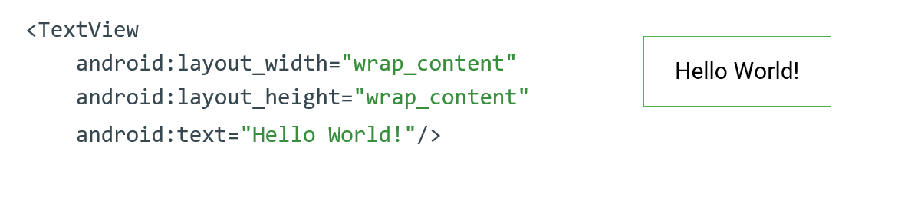
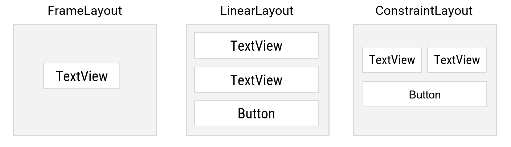
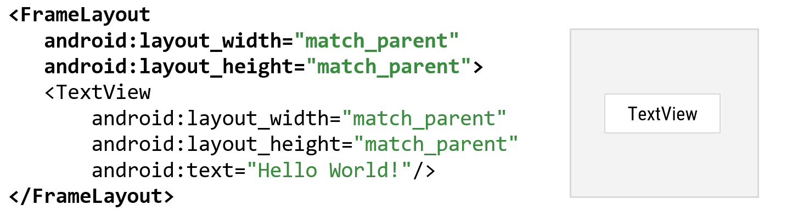
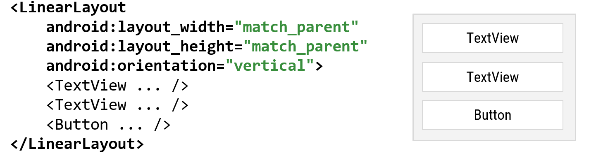
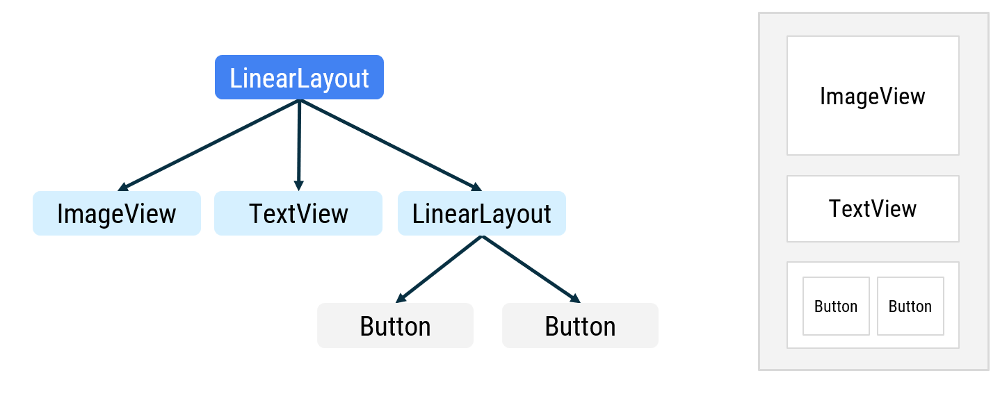

Ползовательский интерфейс (первое Activity)
При создании первого приложения, вы могли увидеть интерфейс работы с “внешним видом” вашего Android-приложения.
По умолчанию, файл /layout/activity_main.xml определяет разметку первой "страницы" (activity), которую видит, с которой взаимодействует пользователь.
 Рис. 2. Окно макета
Рис. 2. Окно макета Activity.
Помимо использования Palette\Политры для добавления новых виджетов, можно также добавлять новые и менять свойства существующих виджетов (View), используя XML-редактор.
Листинг 1. activity_main.xml
<?xml version="1.0" encoding="utf-8"?>
<androidx.constraintlayout.widget.ConstraintLayout xmlns:android="http://schemas.android.com/apk/res/android"
...
...
tools:context=".MainActivity">
<TextView
android:id="@+id/textView2"
android:layout_width="wrap_content"
android:layout_height="wrap_content"
android:text="Hello World!"
app:layout_constraintBottom_toBottomOf="parent"
app:layout_constraintEnd_toEndOf="parent" />
<Button
android:id="@+id/go_to_second_activity"
android:layout_width="wrap_content"
android:layout_height="wrap_content"
android:text="SecondActivity"/>
</androidx.constraintlayout.widget.ConstraintLayout>
Макет Activity, по умолчанию, определяет два виджета (widgets):
ConstraintLayout;
TextView;
p.s. Button (из примера выше) мы добавили после создания первого приложения.
Виджеты представляют собой структурные элементы пользовательского интерфейса. Существую различные виджеты по своим функциям\свойствам: вывод текста на экран, ввод текста, нажатие кнопки и другие взаимодействия с пользователем. В примере выше Button, TextView - это лишь разновидности виджетов.
Размеры виджетов

Рис.3. Пример TextView.
В Android есть несколько способов задать размеры виджета по высоте и ширине на экране.
wrap_content- использует только необходимое количество “места” относительно содержимого внутри виджета. Допустим, если хотим использовать размерViewтолько на размер текста внутри него;match_parent- наследует значение родительского виджета\группы виджетов;Fixed value(db -density-independent pixel) - фиксированное значение почти в пикселях.
android:layout_width="wrap_content"
android:layout_width="match_parent"
android:layout_width="48dp"
ViewGroups
ViewGroup - это некий контейнер, в котором распологаются все элементы экрана (TextView, Buttons, Scroll, ImageView, Fragment, и т.д.).

Рис. 4. Виды ViewGroup.
Если необходимо отобразить несколько элементов на экране, используйте ViewGroup. ViewGroup также контролирует как будут располагаться виджеты внутри контейнера.
Является родительским (parent) для всех виджетов внутри, а сами виджеты называются дочерними (child).
FrameLayout- если хотите использовать только один виджет внутри контейнера (часто используется для Всплывающих окон);LinearLayout- складывает виджеты один за другим в колону по горизонтали или по вертикали;ConstraintLayout- более “свободный” вид помпановки, можно создавать сложные интерфейсы. Android - рекомендует именно его к использованию.
FrameLayout

Рис. 5. Пример FrameLayout.
LinearLayout

Рис. 6. Пример LinearLayout.
Иерархия виджетов
Помимо просто виджетов (Views) ViewGroup также может содержать в себе другие ViewGroup. Это создает некую иерархию виджетов, которые зависят от родительского ViewGroup.

Рис. 7. Пример отображения иерархии виджетов.
Идентификаторы виджетов
Каждый элемент res - ресурсов Android имеет свой уникальный resource ID для доступа к элементу.